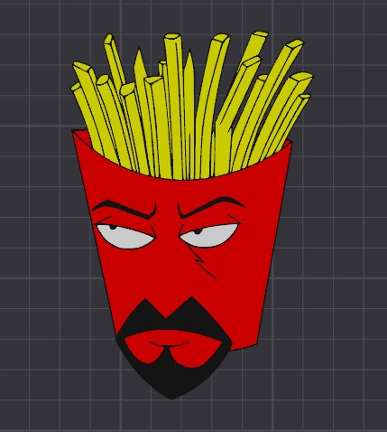

About Me
Hi, I'm Antonio Banks. I am passionate about technology, creativity, and continuous learning. As a Tech Program Intern, I’ve had the opportunity to collaborate across teams, manage timelines, and support the coordination of key initiatives. These experiences have strengthened my skills in communication, organization, and strategic planning, while also deepening my understanding of how projects move from concept to completion. I value integrity, curiosity, and collaboration, and I take pride in approaching challenges with both structure and empathy.
